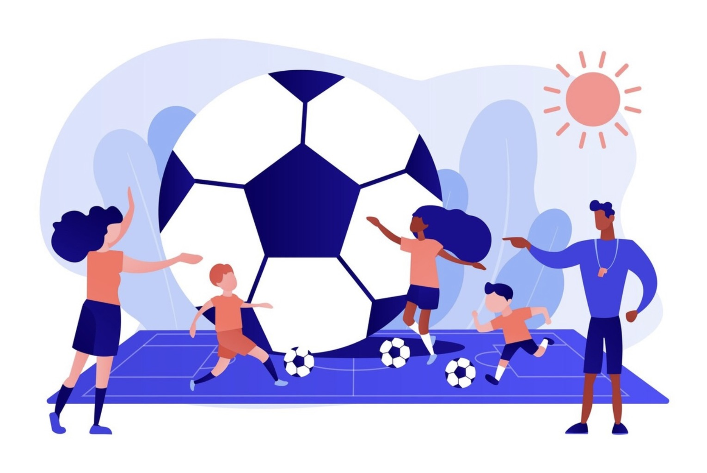

Recreational Football
I regularly play recreational football with friends on weekends, which helps me stay active and maintain a good balance alongside my studies.
Beyond the physical aspect, these friendly matches are a great way to connect with others, develop team spirit, and release stress after intense academic periods.
